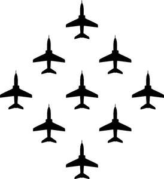
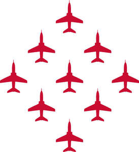

Trade Mark Journal No.2026/008 20 February 2026
UK00004304736 3 December 2025 (6,9,14,16,18,20,21,24,25,26,28,29,30,32,33,34,36,41)
Mark 1

Mark 2

- Class 6
- Works of art of metal; sculptures of metal; decorative plaques [ornaments] made of metal; car badges; metal identity discs for pets. .
- Class 9
- Audio recordings; video recordings; computer game programs; publications (electronic), downloadable; magnets (decorative ); phone covers [specifically adapted]; mousepads; memory sticks; spectacle cases.
- Class 14
- Figurines of precious metal; ornaments of precious metal; jewellery; coins; medals; key rings [trinkets or fobs]; trophies; badges of precious metal; lapel pins; tie pins; cuff links; watches; watch straps; clocks.
- Class 16
- Printed publications; stationery; diaries; greeting cards; paperweights; bookmarks; pens; pencils; rubber erasers; wrapping paper; postal stamps; calendars; planners including wall planners; certificates; postcards; stickers; stickers for retail labelling; posters; programmes for air displays; tickets; engineering and pilot training publications.
- Class 18
- Travelling bags; umbrellas; wallets; purses; trunks; key cases; collars, leads and harnesses for animals.
- Class 20
- Works of art of wood, wax, plaster or plastic; models [ornaments] made of wood, wax, plaster or plastic; decorative plaques [ornaments] made of wood, wax, plaster or plastic; picture frames; pillows; cushions.
- Class 21
- Glassware; pottery; porcelain ware; earthenware; containers for household or kitchen use; glass decanters; plates; crockery; cutting boards for the kitchen; tableware; drinking flasks; bottles; thermal mugs; mugs; cups; glasses; lunch boxes; vases; flower pots; domestic and kitchen utensils and containers; coasters; tankards; tankards of precious metal; presentation glassware; plates for collectors; coin [money] boxes of non-metallic materials; candle holders.
- Class 24
- Fabrics in tartan patterns; bed sheets; duvets; pillow cases; curtains; wall hangings; table linens; blankets; bath linen; flags; pennants; banners; covers for cushions; handkerchiefs of textile.
- Class 25
- Clothing; footwear; headgear for wear; sportswear; belts for clothing; neckties; pocket squares; fancy dress costumes.
- Class 26
- Badges for wear, not of precious metal; buckles [clothing accessories]; buttons; embroidery; haberdashery ribbons; thimbles; cross-stitch kits.
- Class 28
- Games and playthings; model toys; model construction kits; costumes being children’s playthings; soft toys; decorations for Christmas trees; model aircraft.
- Class 29
- Fruit preserves; jams.
- Class 30
- Coffee; tea; confectionery; sauces (condiments).
- Class 32
- Beers; mineral and aerated waters and other non-alcoholic drinks.
- Class 33
- Alcoholic beverages (except beers).
- Class 34
- Lighters for smokers.
- Class 36
- Charitable fundraising; financial sponsorship; financial grants.
- Class 41
- Arranging of air displays; entertainment in the nature of an amusement park ride; motivational speaking; education; providing of training; entertainment; sporting activities; organisation of exhibitions for cultural or educational purposes; providing museum facilities; performances (presentation of live —); archive library services; providing on-line electronic publications, not downloadable.
The Secretary of State for Defence
Representative: Christopher Shea